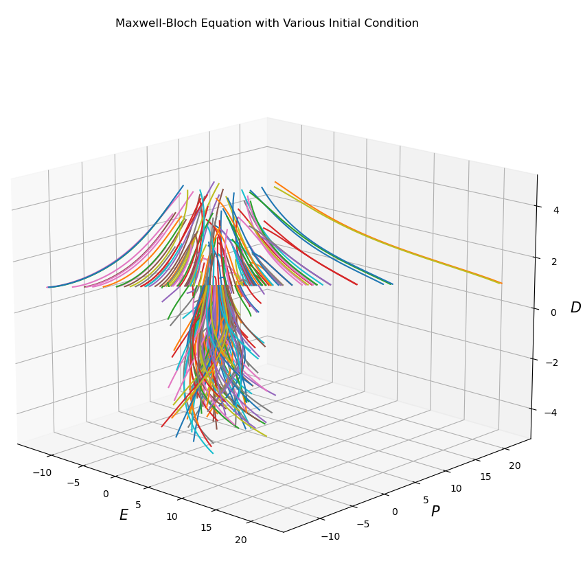
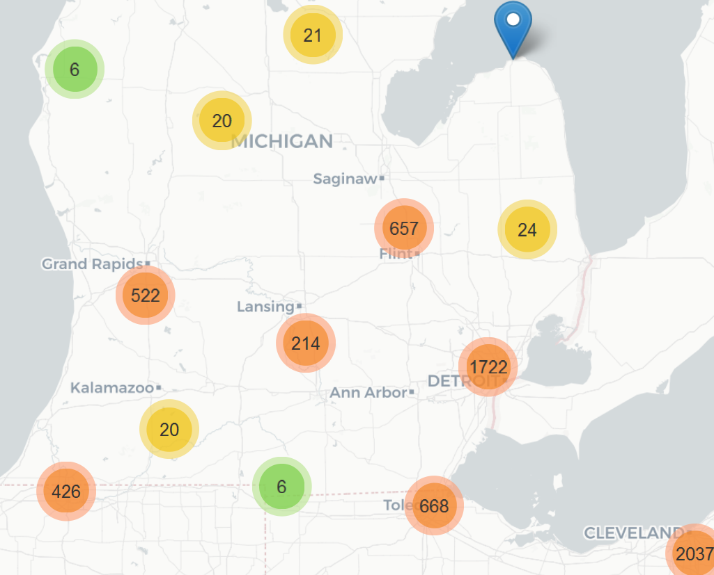

Projects
 Survey of Laser Models (with a focus on Maxwell-Bloch equations)
Academic review paper that explores three different equation models for lasers. Takes a general overview on the relevance of lasers in society and approaches from a simple to complex view on the different equation models. Covers ODEs (ordinary differential equations) in one, two, and three dimensions and analyses for long-term solutions (bifurcation theory). Written for AMATH 383.
Husky Maps
Implemented various data structures in to HuskyMaps application. Algorithms/structures include, but are not limited to, binary search, LLRB trees, hash tables, and Dijkstra's algorithm. Written for CSE 373.
 U.S. Gun Violence
A data visualization of American gun violence using R-Shiny and tidyverse. Written for INFO 201.